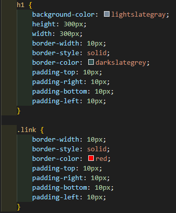
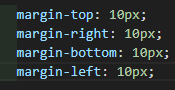
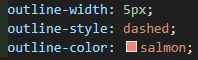

Parágrafos também são exemplos de box-level, mas os links são exemplos de caixas inline-level. Vou mostrar como tudo isso funciona.
Assim fica uma configuração de box nas CSS:
Os parâmetros inserido são: height para altura, width para largura, border-width para definir a largura da borda, border-style para definir o tipo de borda, border-color para definir a cor da borda, padding-top para definir a distância do padding do topo e os outros paddings tem a mesma função só que para cada lado. As configurações de padding devem ser postas em um sentido horário, primeiro top, depois right, depois bottom e por fim left.
Existe também uma outra medida que é a margem (margin), a margin também é configurada como o padding, no sentido do relógio, a margin serve para criar um espaço externo entre uma caixa e outra.
Para centralizar caixas usando margin, basta escrever margin: auto; que automaticamente a caixa será centralizada na tela.
Outra coisa que também pode ser feita, é criar o outline. Outline fica entre a borda e a margem, porém dentro da margin. Para configurá-la faz-se dessa maneira:
Essas configurações fizeram aparecer esse tracejado em volta da caixa.
Para fazer essa simplificação utiliza-se shorthands, que já vimos anteriorimente, as declarações simplificadas ficam da seguinte forma:
h1 {
background-color: lightslategray;
height: 300px;
width: 300px;
border: 10px solid darkslategray;
padding: 10px /*10px 10px 10px |como todas são iguais não é necessário informar a configuração de cada uma, caso fossem diferentes precisaria de uma declaração de pixels para cada, também há como colocar apenas duas declarações,
fazendo com que a primeira configuração se aplique ao topo e embaixo e a segunda a direita e a esquerda*/;
margin: 20px 20px 40px 20px /*caso eu queira centralizar com shorthand, devo colocar 20px (configuração do top), auto (configuração da direita), 40px (configuração do bottom), auto (configuração da esquerda)*/;
outline: 5px dashed salmon;
}
NECESSARIAMENTE NESSAS ORDENS